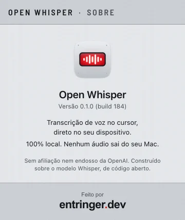
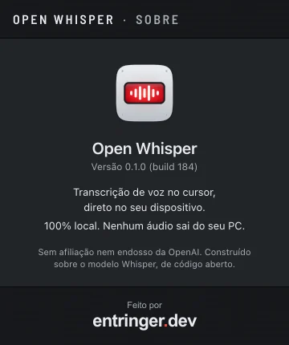

A janela Sobre diz qual cópia do Open Whisper você tem. Esta página também diz onde estão os termos de uso e os avisos das partes feitas por outros, e onde as versões novas são publicadas.
A janela Sobre
- Abra o menu: o ícone na barra de menus no Mac, na área de notificação no Windows.
- Escolha Sobre o Open Whisper.
- Feche com Esc.
Ela mostra:
- O nome do app e a linha Versão … (build …).
- Transcrição de voz no cursor, direto no seu dispositivo.
- 100% local. Nenhum áudio sai do seu Mac. No Windows: 100% local. Nenhum áudio sai do seu PC.
- Um aviso de que o Open Whisper não tem afiliação nem endosso da OpenAI e é construído sobre o modelo Whisper.
- O link Feito por entringer.dev, que abre essa página no seu navegador.




Versão e build
A versão, como 0.1.0, dá nome ao release. O número do build distingue cópias feitas para a mesma versão.
Dá para selecionar a linha e copiar. Cole em qualquer relato de problema. Na linha de comando, open-whisper --version também mostra a versão.
Termos de uso
O Open Whisper é gratuito: para instalar e usar, no trabalho ou fora dele, em quantos computadores você quiser, sem conta. Os termos completos, em português e inglês, estão em openwhisper.entringer.dev/terms.txt.
Mac
Uma cópia vem dentro do app, como LICENSE.txt em Open Whisper.app/Contents/Resources/.
Windows
O instalador mostra os termos antes de instalar, e uma cópia é instalada junto com o app como LICENSE.txt.
Avisos de terceiros
O Open Whisper inclui trabalho de outras pessoas, como os modelos de fala Whisper, o motor whisper.cpp e a fonte Barlow. Os avisos e as licenças deles estão em openwhisper.entringer.dev/third-party-notices.txt, e uma cópia vem com o app como THIRD-PARTY-NOTICES.txt, ao lado do LICENSE.txt.
Releases e as notas de cada um
Toda versão é publicada na página de Releases, com notas sobre o que mudou e os arquivos para baixar, cada um com o seu checksum.
O Open Whisper não procura atualizações sozinho: ele não faz nenhum acesso à rede que você não pediu. Para saber das versões novas, acompanhe a página de Releases: no GitHub, Watch → Custom → Releases. A instalação está em Instalar.